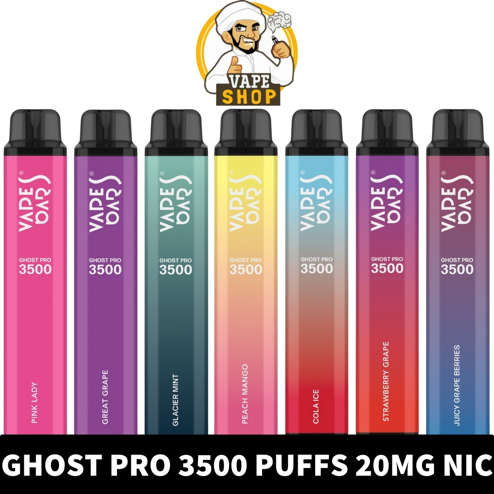
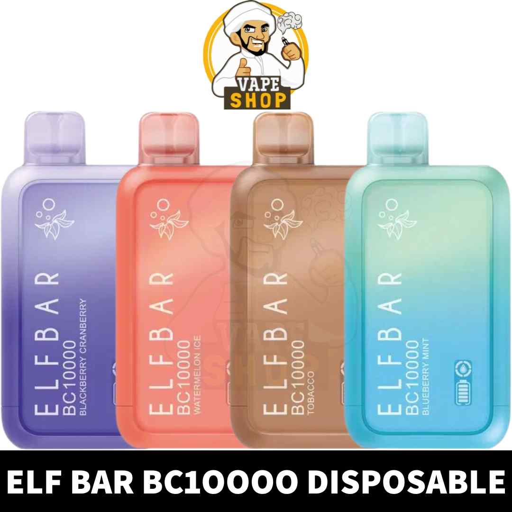

The vaping market has changed beyond basic designs and simple devices. Today, product appearance, portability, display quality, and practical features all play a role in how brands develop their identity. Vapes Bars and Elf Bar have built recognition through different design approaches. One focuses on bold aesthetics, while the other brings a modern street-culture influence to its product styling.
Explore how these design ideas appear in two recognisable devices and what makes their features stand out.
Product design has become an important part of the disposable vape market. Brands now pay attention to shape, colours, screen layouts, and overall construction. These details help create a recognisable identity.
Vapes Bars has developed an aesthetic approach built around modern styling and distinctive product appearances. Elf Bar, meanwhile, has gained attention for colourful designs and contemporary visual themes. Their different approaches reflect how brands use design to create product recognition.
The Vapes Bars Ghost Pro represents a design direction that combines a modern appearance with a feature-focused layout. Its product identity centres on a bold exterior and a distinctive visual presentation.

The Ghost Pro stands out through its contemporary styling. Its overall design reflects the demand for devices that look different from traditional disposable models. The exterior gives the product a recognisable appearance without relying on complicated visual details.
The Vapes Bars Ghost Pro also reflects the wider shift towards devices that combine appearance with practical design considerations. However, buyers should check the official specifications for details about its dimensions, materials, and available colour options.
A display can make a device easier to understand. Depending on the specific version, screen features may show information such as battery status and e-liquid levels. These indicators help explain the device's remaining capacity.
The placement and readability of these features also affect the overall design. A clear interface can make product information easier to access without adding unnecessary complexity.
Elf Bar follows a different visual direction. Its products often feature colourful finishes, compact shapes, and contemporary styling. This approach connects with a younger-looking streetwear aesthetic, although nicotine products are intended only for adults of legal purchasing age.

The Elf Bar 10000 Puffs 50Mg highlights the brand's approach to combining product identity with a compact format. Its design reflects the preference for portable devices with a recognisable exterior.
Colour choices and exterior finishes contribute to its visual identity. These details help distinguish the product from devices that use simpler, more traditional designs.
The 10,000-puff figure represents the manufacturer's stated maximum puff capacity. Actual results can vary with usage patterns and other conditions. Buyers should also verify the Elf Bar 10000 Puffs 50Mg specifications before making comparisons.
The 50mg nicotine strength is another important specification. It should not be treated as a minor design detail. Nicotine is addictive, and higher-strength products carry particular risks. Adults should understand local regulations and health risks before considering any nicotine-containing product.
Vapes Bars and Elf Bar approach product aesthetics from different perspectives. Ghost Pro represents a bold, modern visual direction, while Elf Bar uses colourful styling and street-inspired design elements.
However, appearance alone cannot establish product quality. Battery specifications, manufacturing standards, ingredient information, and regulatory compliance deserve equal attention. Consumers should also avoid assuming that similar-looking devices share the same internal technology.
The Vapes Bars Ghost Pro and Elf Bar 10000 Puffs 50Mg represent two different approaches to modern device aesthetics. One reflects bold exterior styling, while the other draws on colourful, street-inspired visual identity. Their designs show how appearance and product presentation shape brand recognition.
Still, a device should never be judged by its exterior alone. Accurate specifications, product authenticity, safety information, and legal compliance remain essential considerations.